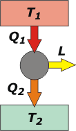

|
NO ME SALEN
(APUNTES TEÓRICOS Y EJERCICIOS DE BIOFÍSICA DEL CBC)
CALOR Y TERMODINÁMICA
|
|

|
| |
 |
40) Un inventor afirma haber desarrollado una máquina que extrae 25200 kcal de una fuente
térmica, entrega 6500 kcal a otra fuente térmica y realiza un trabajo de 25 kWh ¿Es
posible este invento? Justifique su respuesta. |
|
| |
Acá tenés un esquema de una máquina térmica: el círculo gris del centro es la máquina propiamente dicha. Como toda máquina, es gris-acero un poco sucia de aceite. El rectángulo de arriba es la fuente caliente, o sea, la caldera, que se encuentra a una temperatura elevada, T1, y que le entrega un calor, Q1, a la máquina (podría ser un chorro de vapor o alguna otra cosa con mucha energía). El rectángulo de abajo es el medio ambiente, que -lógicamente- se encuentra a una temperatura inferior, T2, al que la máquina le tira el calor que no puede aprovechar, Q2 (por la chimenea, o el caño de escape, da lo mismo). L es el trabajo precioso que entrega la máquina, por eso le puse color dorado. |
|
|
|  |
En este ejercicio nos informan los valores de Q1, Q2 y L, pero conviene que los expresemos en las mismas unidades para poder compararlos.
Q1 = 25.200 kcal
Q2 = 6.500 kcal
L = 25 kWh = 21.500 kcal
Ahora sí, podemos compararlas. |
|
|
|
El Primer Principio de la temodinámica dice que la energía neta que entra o sale de un sistema (la máquina en nuestro caso) es igual a la suma de la variación de energía interna, ΔU, más el trabajo realizado por el sistema, L.
QN = ΔU + L
El subíndice que le puse al calor corresponde a NETO. Porque el calor que intercambia la máquina... una parte lo recibe, otra parte lo cede, de modo que una parte irá sumando y a la otra le corresponderá ir restando. La variación de energía interna de la máquina es cero (ΔU = 0) si suponemos que no le cambia la temperatura mientras funciona (no hablamos del arranque sino del régimen estacionario del funcionamiento). La cosa queda así:
Q1 – Q2 = L
El asunto no cierra, porque:
25.200 kcal – 6.500 kcal = 18.700 kcal
Y el inventor dice que el trabajo vale 21.500 kcal. Yo no le compraría la máquina. |
|
Ayudame a mejorar el
CBC |
|
|
 |
| Desafío: ¿Cuál sería la eficiencia real de la máquina y cuál la que nos quiere hacer creer el inventor? |
|
| Algunos derechos reservados.
Se permite su reproducción citando la fuente. A los profesores de Física es imposible engañarlos. Última actualización
jul-08. Buenos Aires, Argentina. |
|
|
| | |
|
|